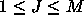
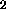
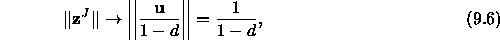
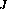
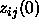
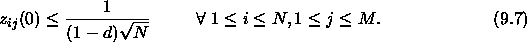
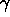
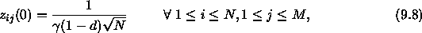
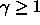

For an ART2 network the weights of the top-down-links
(F
 F
F links) are set to 0.0 according to the
theory ([CG87b]).
links) are set to 0.0 according to the
theory ([CG87b]).
The choice of the initial bottom-up-weights is determined as follows:
if a pattern has been trained, then the next
presentation of the same pattern must not generate a new winning class.
On the contrary, the same F unit should win, with a higher
activation than all the other recognition units.
unit should win, with a higher
activation than all the other recognition units.
This implies that the norm of the initial weight-vector has to be smaller than the one it has after several training cycles. If J (

) is the actual winning unit in F
, then equation

where z

is the the weight vector of the links from the F units to the Jth F
units to the Jth F unit and where d is a parameter, described
below.
unit and where d is a parameter, described
below.
If all initial values

are presumed to be equal, this means:

If equality is chosen in equation  , then ART2 will
be as sensitive as possible.
, then ART2 will
be as sensitive as possible.
To transform the inequality  to an equation,
in order to compute values, we introduce another
parameter
to an equation,
in order to compute values, we introduce another
parameter

and get:

where

.
To initialize an ART2 network, the function ART2_Weights has to
be selected. Specify the parameters d and  as the first and
second initialization parameter. (A description of parameter d is given
in the subsection on the ART2 learning function.) Finally press the
as the first and
second initialization parameter. (A description of parameter d is given
in the subsection on the ART2 learning function.) Finally press the
 -button to initialize the net.
-button to initialize the net.
WARNING! You should always use ART2_Weights to initialize ART2 networks. When using another SNNS initialization function the behavior of the simulator during learning is not predictable, because not only the trainable links will be initialized, but also the fixed weights of the network.